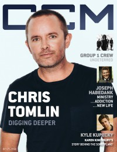
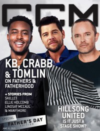

Chris Tomlin
 December 2010 CCM Digital |
 February 2013 CCM Digital |
 15 October 2014 CCM Digital |
 15 June 2015 CCM Digital |
 1 November 2016 CCM Digital |
Media coverage:
- May 2001 in CCM "Opening Acts: Chris Tomlin", by Andy Argyrakis
- Feb 2003 in Christian Single "Chris Tomlin", by Leslie McKellar
- Sep 2003 in CCM "Story Behind the Song: Forever", by Janet Chismar
- Feb 2004 in CCM "Insider: On The Fly: Tales of Love And Heartbreak", by Christina Farris
- Mar 2004 in CCM "Something Old, Something New", by David Schrader
- Mar 2004 in Worship Leader "So You Want to Write a Worship Song"
- Mar 2004 in Worship Leader "The Fine Art of Collaboration with Chris Tomlin"
- Jul 2004 in CCM "Insider: Sneak Peek"
- Jul 2004 in Worship Leader "The Worship Professional: Calling, Serving, and Looking", by Davin Seay
- Nov 2004 in CCM "Here To Stay: Almost Famous", by Robert Mineo
- Mar 2005 in CCM "Standing Room Only: All Things New Tour", by Andy Argyrakis
- Jun 2005 in Christian Single "Featured Artist: Chris Tomlin", by Andy Argyrakis
- Sep 2005 in CCM "By The Numbers: Chris Tomlin", by Gregory J. Rumburg
- Jan 2006 in CCM "Our Love Is Loud: The Noise We Make", by Janet Chismar
- Jan 2006 in Worship Leader "Song Story: Forever", by Jeremy Armstrong
- Mar 2006 in Worship Leader "Table Talk: How to Dismantle an Atomic Song", by Andrew Philip
- Mar 2006 in Christian Music Planet "21 Things You Always Wanted To Know About...: Chris Tomlin", by Jenni Isaac
- Apr 2006 in CCM "!Songwriters", by Christina A. Banister
- Apr 2006 in CCM "Standing Room Only: Indescribable Tour", by Andy Argyrakis
- Jul 2006 in CCM "Insider: In Pursuit of Passion", by Jackie A. Chapman
- Oct 2006 in CCM "Morning Glory", by Beau Black
- Oct 2006 in CCM "Morning Is Breaking", by Beau Black
- Nov 2006 in New Man "Male Matters: The Worshipper"
- Jan 2007 in CCM "The Art of Voting", by Jay Swartzendruber
- Feb 2007 in Christian Single "Q&A: Chris Tomlin"
- Mar 2007 in Charisma & Christian Life "Buzz Spotlight: Morning Glory", by DeWayne Hamby
- Apr 2007 in CCM "Made To Worship", by Nichole Nordeman
- Apr 2007 in Christianity Today "Passion Takes It Higher", by Collin Hansen
- Jul 2007 in CCM "Ask Your Favorite Artist: Chris Tomlin"
- Sep 2007 in Ignite Your Faith "Could I Handle the Pressure?", by Todd Hertz
- Sep 2008 in Group "The Rip Out: Ministry and Media: Chris Tomlin", by Scott Firestone IV
- Dec 2008 in Christian Single "Q&A: Chris Tomlin"
- Aug 2009 in Charisma & Christian Life "He Hears Heaven's Music", by Bruce Goolsby
- Dec 2010 in CCM Digital "Leading the Bride", by Caroline Lusk
- Dec 2010 in Charisma "A Season To Remember: Chris Tomlin"
- Jan 2011 in Group "Ideas: Ministry and Media: Chris Tomlin", by Scott Firestone IV
- Dec 2011 in CCM Digital "Worship: The Essentials", by Caroline Lusk
- Jan 2012 in Relevant "Accidental Movement", by Tyler Charles
- Jan 2013 in Worship Leader "Featured Review Inside Track: Chris Tomlin"
- Jan 2013 in CCM Digital "Musicians Corner: Story Behind the Song: Whom Shall I Fear"
- Feb 2013 in CCM Digital "He's No Hero", by Caroline Lusk
- Jul 2013 in Relevant "The Drop: Chris Tomlin: Earth's Most Sung Artist"
- Nov 2013 in Relevant "The Drop: Profile: Chris Tomlin"
- Dec 2013 in CCM Digital "Tour Spotlight: Burning Lights Tour, Willow Creek Community Church, South Barrington, IL", by Andy Argyrakis
- 15 Oct 2014 in CCM Digital "Digging Deeper: Chris Tomlin Soaks In The Goodness Of His God", by Caroline Lusk
- 15 Jun 2015 in CCM Digital "Happy Father's Day: Forever Father"
- 15 Dec 2015 in CCM Digital "Christmas & Communion: Praying For An Awakening"
- Mar 2016 in Worship Leader "Worship With A Common Touch", by Davin Seay
- 1 Oct 2016 in CCM Digital "Book Review: (Chris Tomlin, Pat Barrett) Good Good Father book review", by Kevin Sparkman
- 1 Nov 2016 in CCM Digital "Sight Not Unseen", by Caroline Lusk
Albums & reviews:
2001: The Noise We Make
- May 2001 in CCM, by Michael Fernandez
- Sum 2001 in Worship Leader, by Kristi Palomaki
- Jul 2001 in YouthWorker, by Dave Urbanski
- Oct 2001 in Church Musician Today, by Shannon Dietor-Hartley
2002: Not to Us
- Sep 2002 in Christian Music Planet, by Shawn Farrington
- Oct 2002 in CCM, by John M. De Marco
- Nov 2002 in YouthWorker, by Dave Urbanski
- Jan 2003 in Worship Leader, by Jessica Ludwig
- May 2003 in Living With Teenagers, by Joy Fisher
2004: Arriving
- Oct 2004 in CCM, by Anthony DeBarros
- Fall 2004 in Worship Leader, by Davin Seay
- Nov 2004 in Relevant, by Chris Neiger
- Jan 2005 in Christian Single, by Andy Argyrakis
2005: Live from Austin Music Hall
- Mar 2006 in New Man, by Chad Bonham, Adrienne S Gaines
- Mar 2006 in Worship Leader
- Mar 2006 in Relevant, by Tory J. Dolan
2006: See the Morning
- Sep 2006 in YouthWorker
- Sep 2006 in CCM, by David McCreary
- Oct 2006 in Worship Leader
- Jan 2007 in Christian Single, by Andy Argyrakis
- Feb 2007 in Living With Teenagers
2008: Hello Love
- Sep 2008 in Worship Leader
- Oct 2008 in Charisma & Christian Life, by Leigh Devore
- Feb 2009 in Living With Teenagers, by Randy Williams
2009: Glory In The Highest: Christmas Songs of Worship
- Nov 2009 in Worship Leader, by Daryl Bean
- Dec 2009 in Charisma & Christian Life, by Leigh Devore
- Dec 2009 in Living With Teenagers, by Randy Williams
2010: And If Our God Is For Us...
- Nov 2010 in CCM Digital, by Matt Conner
- Jan 2011 in YouthWorker, by Matt Conner
- Jan 2011 in Worship Leader, by Jeremy Armstrong
2011: How Great Is Our God: The Essential Collection
- Nov 2011 in CCM Digital, by Andy Argyrakis
- Jan 2012 in Worship Leader, by Amanda Furbeck
2013: Burning Lights
- Jan 2013 in Charisma, by DeWayne Hamby
- Jan 2013 in Worship Leader, by Andrea Hunter
- Jan 2013 in CCM Digital, by Andy Argyrakis
2014: Love Ran Red
- Nov 2014 in Worship Leader, by Jeremy Armstrong
- 1 Nov 2014 in CCM Digital, by Matt Conner
2015: Adore: Christmas Songs of Worship
- Nov 2015 in Worship Leader
- 15 Nov 2015 in CCM Digital, by Matt Conner
2016: Never Lose Sight
- Nov 2016 in Worship Leader, by Barry Westman
- 1 Nov 2016 in CCM Digital, by Matt Conner
2019: Holy Roar: Live From Church
2020: Miracle Of Love: Christmas Songs Of Worship
2020: Chris Tomlin & Friends
2022: Emmanuel: Christmas Songs Of Worship (Live)
2022: Always
2024: Live from Good Friday
Award Summary (Nominations / Wins)
Dove Awards- 2003 Dove Awards
- Praise & Worship Album: Not to Us
- Praise & Worship Album: Arriving
- Song: "How Great Is Our God"
- Song: "Holy Is The Lord"
- Songwriter
- Male Vocalist
- Artist
- Worship Song: "How Great Is Our God"
- Worship Song: "Holy Is The Lord"
- Song: "Made To Worship"
- Male Vocalist
- Pop/Contemporary Album: See the Morning
- Artist
- Praise & Worship Album: See the Morning
- Pop/Contemporary Recorded Song: "Made To Worship"
- Worship Song: "Holy Is The Lord"
- Worship Song: "Made To Worship"
- Song: "Amazing Grace (My Chains Are Gone)"
- Male Vocalist
- Artist
- Worship Song: "How Great Is Our God"
- Worship Song: "Amazing Grace (My Chains Are Gone)"
- Song: "Amazing Grace (My Chains Are Gone)"
- Male Vocalist
- Artist
- Praise & Worship Album: Hello Love
- Worship Song: "Jesus Messiah"
- Song: "I Will Rise"
- Worship Song: "I Will Rise"
- Christmas Album: Glory In The Highest: Christmas Songs of Worship
- Song: "Our God"
- Male Vocalist
- Artist
- Worship Song: "Our God"
- Male Vocalist
- Praise & Worship Album: And If Our God Is For Us...
- Short Form Music Video: "I Lift My Hands"
- Song: "Whom Shall I Fear (God of Angel Armies)"
- Pop/Contemporary Album: Burning Lights
- Artist
- Praise & Worship Album: Burning Lights
- Praise & Worship Song: "Whom Shall I Fear (God of Angel Armies)"
- Songwriter
- Songwriter
- Pop/Contemporary Album: Love Ran Red
- Worship Album: Love Ran Red
- Contemporary Christian Artist
- Songwriter
- Pop/Contemporary Recorded Song: "Good Good Father"
- Christmas Album: Adore: Christmas Songs of Worship
- Songwriter
- Artist
- Short Form Music Video: "Jesus"
- Worship Album: Never Lose Sight
- Worship Recorded Song: "Resurrection Power"
- Long Form Music Video: Holy Roar: Live From Church
- Worship Album: Holy Roar
- Pop/Contemporary Album: Chris Tomlin & Friends
- Christmas / Special Event Album: Miracle Of Love: Christmas Songs Of Worship
- Christmas / Special Event Album: Emmanuel: Christmas Songs Of Worship (Live)
- 2006 Grammy Awards
- Best Gospel Performance: "Made To Worship"
- Best Pop/Contemporary Gospel Album: See the Morning
- Best Pop/Contemporary Gospel Album: Hello Love
- Best Gospel/Contemporary Christian Music: "I Lift My Hands"
- Best Contemporary Christian Music Song: "I Lift My Hands"
- Best Contemporary Christian Music Album: And If Our God Is For Us...
- Best Contemporary Christian Music Song: "Whom Shall I Fear (God Of Angel Armies)"
- Best Contemporary Christian Music Album: Burning Lights
- Best Contemporary Christian Music Album: Love Ran Red
- Best Contemporary Christian Music Album: Holy Roar
Books about Chris Tomlin
- "Chris Tomlin" in The Encyclopedia of Contemporary Christian Music (Mark Allan Powell, 2002).
© 2011 CMnexus. Last updated May 2025. Contact: editor -AT- cmnexus -DØT- org